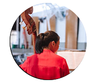

Hanxiao Deng is a double bassist based in the United States. She graduated from the Curtis Institute of Music in Philadelphia, where she majored in double bass performance and also trained in piano. She previously studied at the Manhattan School of Music and the Middle School affiliated with the Shanghai Conservatory of Music, and has worked with distinguished teachers including Harold Robinson, Edgar Meyer, and Nathaniel West.
She has performed with a range of professional ensembles, including the Chamber Orchestra of Philadelphia, the Baltimore Symphony Orchestra, the Philadelphia Ballet Orchestra, and the National Repertory Orchestra. Her solo and chamber music performances have taken place at the Curtis Institute of Music, the Manhattan School of Music, and in concerts both in the United States and China.
Following her graduation, Ms. Deng has continued to work at the Curtis Institute of Music. She also teaches double bass and piano to both adult and youth students.
She is the founder and director of the Symposium for Women Bassists, the first international symposium dedicated to women bassists, which has developed into an international professional platform dedicated to connecting performers, educators, and students, and fostering artistic exchange, mentorship, and professional development.
邓含笑是一位旅美低音提琴演奏家，毕业于费城柯蒂斯音乐学院， 主修低音提琴，并兼修钢琴。 她曾就读于纽约曼哈顿音乐学院及上海音乐学院附属中学， 师从 Harold Robinson、Edgar Meyer、Nathaniel West 等多位知名音乐家。
她曾与费城室内管弦乐团、巴尔的摩交响乐团、 费城芭蕾舞团、国家剧目交响乐团等多家专业乐团合作演出， 并在柯蒂斯音乐学院、曼哈顿音乐学院及国内外多场音乐会中举办独奏与室内乐演出。
毕业后，邓含笑留在费城柯蒂斯音乐学院工作， 同时指导青少年及成年学生学习低音提琴与钢琴。
她创办并主持女性低音提琴演奏家研讨会， 这是首个面向国际的女性低音提琴演奏家研讨会， 并已发展成为一个面向国际的专业平台， 致力于连接演奏家、教育者与学生， 促进艺术交流、指导与职业发展。
Live performances, official releases, behind-the-scenes content, and new videos uploaded regularly.

Visit the YouTube Channel